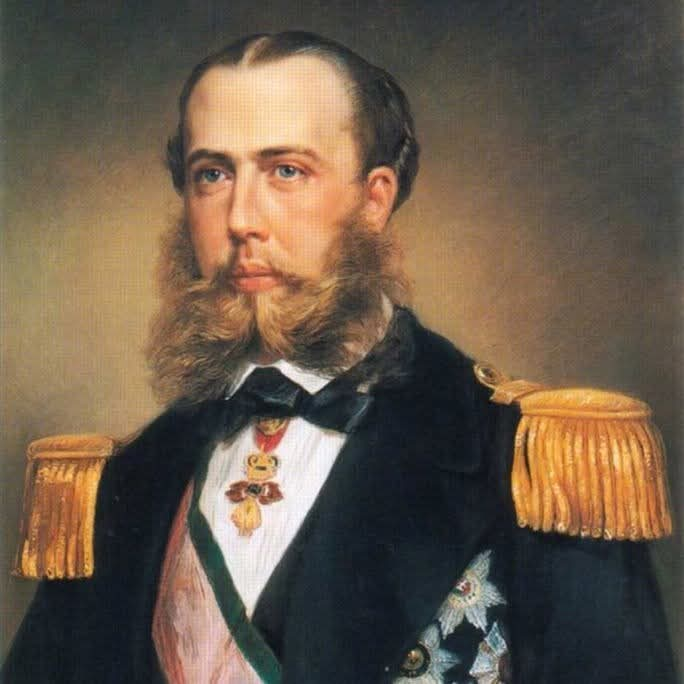

Conoce el conflicto que dio origen al Segundo
Imperio Mexicano y la resistencia republicana
encabezada por Benito Juárez.
La intervención francesa (1862-1867)
Antecedentes
Debido a una crisis económica, el presidente
Benito Juárez anunció la suspensión temporal
del pago de la deuda externa a varios países.
Inglaterra y España llegaron a un acuerdo,
pero Francia aprovechó para intentar establecer
un imperio en territorio mexicano.
Desarrollo del conflicto
1. Intereses de Francia
El emperador francés Napoleón III buscaba
aumentar la influencia de Francia en América
y encontró el apoyo de un grupo de
conservadores mexicanos.
2. Batalla del 5 de mayo de 1862
En 1862, las tropas francesas intentaron
tomar la ciudad de Puebla, pero fueron
derrotadas el 5 de mayo por el ejército
mexicano, dirigido por el general
Ignacio Zaragoza.
3. Ocupación de la Ciudad de México
Sin embargo, Francia envió un ejército
más grande y logró ocupar la Ciudad de México.
4. Segundo Imperio Mexicano
En 1864 llegó al país Maximiliano de Habsburgo,
quien asumió como emperador de México junto
con su esposa Carlota, implantando reformas
liberales y contando únicamente con el
apoyo militar francés.

Maximiliano de Habsburgo.
5. Resistencia de Juárez
Mientras tanto, Benito Juárez mantuvo
un gobierno republicano itinerante
y organizó la resistencia.
6. Apoyo de Estados Unidos
El gobierno estadounidense brindó su apoyo
diplomático y político a Juárez, exigiendo
el retiro de las tropas francesas.
7. Fin del Imperio
Finalmente, Francia retiró su ejército
en 1867 y Maximiliano fue capturado en
Querétaro y fusilado, restaurándose
la República con el regreso de Benito
Juárez a la Ciudad de México.